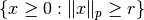
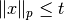
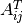
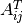
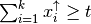
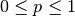
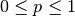
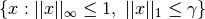

Warning
You are consulting the doc of a former version of PICOS. The latest version is HERE.
picos.tools¶
- picos.tools.available_solvers()¶
Lists all available solvers
- picos.tools.ball(r, p=2)¶
returns a Ball object representing:
- a L_p Ball of radius r (
 ) if
) if 
- the convex set 
 .
.
Example
>>> import picos as pic >>> P = pic.Problem() >>> x = P.add_variable('x', 3) >>> x << pic.ball(2,3) # p-norm ineq : norm_3( x)<2.0# >>> x << pic.ball(1,0.5) # generalized p-norm ineq : norm_1/2( x)>1.0#
- a L_p Ball of radius r (
- picos.tools.detrootn(exp)¶
returns a DetRootN_Exp object representing the determinant of the
 th-root of the symmetric matrix exp, where is the dimension of the matrix.
This can be used to enter constraints of the form
th-root of the symmetric matrix exp, where is the dimension of the matrix.
This can be used to enter constraints of the form  .
Note that
.
Note that  is forced to be positive semidefinite when a constraint of this form is entered in PICOS.
Determinant inequalities are internally reformulated as a set of Linear Matrix Inequalities (SDP).
is forced to be positive semidefinite when a constraint of this form is entered in PICOS.
Determinant inequalities are internally reformulated as a set of Linear Matrix Inequalities (SDP).Example:
>>> import picos as pic >>> prob = pic.Problem() >>> X = prob.add_variable('X',(3,3),'symmetric') >>> t = prob.add_variable('t',1) >>> t < pic.detrootn(X) # nth root of det ineq : det( X)**1/3>t#
- picos.tools.diag(exp, dim=1)¶
if exp is an affine expression of size (n,m), diag(exp,dim) returns a diagonal matrix of size dim*n*m
 dim*n*m,
with dim copies of the vectorized expression exp[:] on the diagonal.
dim*n*m,
with dim copies of the vectorized expression exp[:] on the diagonal.In particular:
- when exp is scalar, diag(exp,n) returns a diagonal
matrix of size
 , with all diagonal elements equal to exp.
, with all diagonal elements equal to exp. - when exp is a vector of size , diag(exp) returns the diagonal
matrix of size with the vector exp on the diagonal
Example
>>> import picos as pic >>> prob=pic.Problem() >>> x=prob.add_variable('x',1) >>> y=prob.add_variable('y',1) >>> pic.tools.diag(x-y,4) # (4 x 4)-affine expression: Diag(x -y) # >>> pic.tools.diag(x//y) # (2 x 2)-affine expression: Diag([x;y]) #
- when exp is scalar, diag(exp,n) returns a diagonal
matrix of size
- picos.tools.diag_vect(exp)¶
Returns the vector with the diagonal elements of the matrix expression exp
Example
>>> import picos as pic >>> prob=pic.Problem() >>> X=prob.add_variable('X',(3,3)) >>> pic.tools.diag_vect(X) # (3 x 1)-affine expression: diag(X) #
- picos.tools.eval_dict(dict_of_variables)¶
if dict_of_variables is a dictionary mapping variable names (strings) to variables, this function returns the dictionary names -> variable values.
- picos.tools.flow_Constraint(G, f, source, sink, flow_value, capacity=None, graphName='')¶
Returns an object of the class _Flow_Constraint that can be passed to a problem with add_constraint().
G a directed graph (class DiGraph of networkx)
f must be a dictionary of variables indexed by the edges of G
source can be eiter a node of G, or a list of nodes in case of a multisource-single sink flow
sink can be eiter a node of G, or a list of nodes in case of a single source-multising flow
flow_value is the value of the flow, or a list of values in case of a single source - multisink flow. In the latter case, the values represent the demands of each sink (resp. of each source for a multisource - single sink flow). The values can be either constants or AffinExp.
capacity must be either None or a string. If this is a string, it indicates the key of the edge dictionaries of G that is used for the capacity of the links. Otherwise, edges have an unbounded capacity.
graphName is a string used in the string representation of the constraint.
- picos.tools.geomean(exp)¶
returns a GeoMeanExp object representing the geometric mean of the entries of exp[:]. This can be used to enter inequalities of the form t <= geomean(x). Note that geometric mean inequalities are internally reformulated as a set of SOC inequalities.
Example:
>>> import picos as pic >>> prob = pic.Problem() >>> x = prob.add_variable('x',1) >>> y = prob.add_variable('y',3) >>> # the following line adds the constraint x <= (y0*y1*y2)**(1./3) in the problem: >>> prob.add_constraint(x<pic.geomean(y))
- picos.tools.import_cbf(filename)¶
Imports the data from a CBF file, and creates a Problem object.
The created problem contains one (multidimmensional) variable for each cone specified in the section VAR of the .cbf file, and one (multidimmensional) constraint for each cone specified in the sections CON and PSDCON.
Semidefinite variables defined in the section PSDVAR of the .cbf file are represented by a matrix picos variable X with X.vtype='symmetric'.
This function returns a tuple (P,x,X,data), where:
- P is the imported picos Problem object.
- x is a list of Variable objects, representing the (multidimmensional) scalar variables.
- X is a list of Variable objects, representing the symmetric semidefinite positive variables.
- data is a dictionary containing picos parameters (AffinExp objects) used to define the problem. Indexing is with respect to the blocks of variables as defined in thes sections VAR and CON of the .cbf file.
- picos.tools.lambda_max(exp)¶
largest eigenvalue of a square matrix expression (cf. pic.sum_k_largest(exp,1))
>>> import picos as pic >>> prob = pic.Problem() >>> x = prob.add_variable('X',(3,3),'symmetric') >>> pic.lambda_max(X) < 2 # (3x3)-LMI constraint lambda_max(X)<=2.0 #
- picos.tools.lambda_min(exp)¶
smallest eigenvalue of a square matrix expression (cf. pic.sum_k_smallest(exp,1))
>>> import picos as pic >>> prob = pic.Problem() >>> x = prob.add_variable('X',(3,3),'symmetric') >>> pic.lambda_min(X) > -1 # (3x3)-LMI constraint lambda_min(X)>=-1.0 #
- picos.tools.lowtri(exp)¶
if exp is a square affine expression of size (n,n), lowtri(exp) returns the (n(n+1)/2)-vector of the lower triangular elements of exp.
Example
>>> import picos as pic >>> import cvxopt as cvx >>> prob=pic.Problem() >>> X=prob.add_variable('X',(4,4),'symmetric') >>> pic.tools.lowtri(X) # (10 x 1)-affine expression: lowtri(X) # >>> X0 = cvx.matrix(range(16),(4,4)) >>> X.value = X0 * X0.T >>> print X [ 2.24e+02 2.48e+02 2.72e+02 2.96e+02] [ 2.48e+02 2.76e+02 3.04e+02 3.32e+02] [ 2.72e+02 3.04e+02 3.36e+02 3.68e+02] [ 2.96e+02 3.32e+02 3.68e+02 4.04e+02] >>> print pic.tools.lowtri(X) [ 2.24e+02] [ 2.48e+02] [ 2.72e+02] [ 2.96e+02] [ 2.76e+02] [ 3.04e+02] [ 3.32e+02] [ 3.36e+02] [ 3.68e+02] [ 4.04e+02]
- picos.tools.lse(exp)¶
shorter name for the constructor of the class LogSumExp
Example
>>> import picos as pic >>> import cvxopt as cvx >>> prob=pic.Problem() >>> x=prob.add_variable('x',3) >>> A=pic.new_param('A',cvx.matrix([[1,2],[3,4],[5,6]])) >>> pic.lse(A*x)<0 # (2x1)-Geometric Programming constraint LSE[ A*x ] < 0 #
- picos.tools.new_param(name, value)¶
Declare a parameter for the problem, that will be stored as a cvxopt sparse matrix. It is possible to give a list or a dictionary of parameters. The function returns a constant AffinExp (or a list or a dict of AffinExp) representing this parameter.
Note
Declaring parameters is optional, since the expression can as well be given by using normal variables. (see Example below). However, if you use this function to declare your parameters, the names of the parameters will be displayed when you print an Expression or a Constraint
Parameters: - name (str.) – The name given to this parameter.
- value – The value (resp list of values, dict of values) of the parameter. The type of value (resp. the elements of the list value, the values of the dict value) should be understandable by the function _retrieve_matrix().
Returns: A constant affine expression (AffinExp) (resp. a list of AffinExp of the same length as value, a dict of AffinExp indexed by the keys of value)
Example:
>>> import cvxopt as cvx >>> prob=pic.Problem() >>> x=prob.add_variable('x',3) >>> B={'foo':17.4,'matrix':cvx.matrix([[1,2],[3,4],[5,6]]),'ones':'|1|(4,1)'} >>> B['matrix']*x+B['foo'] # (2 x 1)-affine expression: [ 2 x 3 MAT ]*x + |17.4| # >>> #(in the string above, |17.4| represents the 2-dim vector [17.4,17.4]) >>> B=pic.new_param('B',B) >>> #now that B is a param, we have a nicer display: >>> B['matrix']*x+B['foo'] # (2 x 1)-affine expression: B[matrix]*x + |B[foo]| #
- picos.tools.norm(exp, num=2, denom=1)¶
returns a NormP_Exp object representing the (generalized-) p-norm of the entries of exp[:]. This can be used to enter constraints of the form  with
 .
Generalized norms are also defined for
.
Generalized norms are also defined for  , by using the usual formula
, by using the usual formula
 . Note that this function
is concave (for ) over the set of vectors with nonnegative coordinates.
When a constraint of the form
. Note that this function
is concave (for ) over the set of vectors with nonnegative coordinates.
When a constraint of the form  with
with  is entered, PICOS implicitely assumes that
is entered, PICOS implicitely assumes that  is a nonnegative vector.
is a nonnegative vector.This function can also be used to represent the Lp,q- norm of a matrix (for
 ):
):
 ,
that is, the p-norm of the vector formed with the q-norms of the rows of .
,
that is, the p-norm of the vector formed with the q-norms of the rows of .The exponent
 of the norm must be specified either by
a couple numerator (2d argument) / denominator (3d arguments),
or directly by a float p given as second argument. In the latter case a rational
approximation of p will be used. It is also possible to pass 'inf' as
second argument for the infinity-norm (aka max-norm).
of the norm must be specified either by
a couple numerator (2d argument) / denominator (3d arguments),
or directly by a float p given as second argument. In the latter case a rational
approximation of p will be used. It is also possible to pass 'inf' as
second argument for the infinity-norm (aka max-norm).For the case of
 -norms, p and q must be specified by a tuple of floats
in the second argument (rational approximations will be used), and the third argument will
be ignored.
-norms, p and q must be specified by a tuple of floats
in the second argument (rational approximations will be used), and the third argument will
be ignored.Example:
>>> import picos as pic >>> P = pic.Problem() >>> x = P.add_variable('x',1) >>> y = P.add_variable('y',3) >>> pic.norm(y,7,3) < x # p-norm ineq : norm_7/3( y)<x# >>> pic.norm(y,-0.4) > x # generalized p-norm ineq : norm_-2/5( y)>x# >>> X = P.add_variable('X',(3,2)) >>> pic.norm(X,(1,2)) < 1 # pq-norm ineq : norm_1,2( X)<1.0# >>> pic.norm(X,('inf',1)) < 1 # pq-norm ineq : norm_inf,1( X)<1.0#
- picos.tools.partial_transpose(exp, dim=None)¶
Partial transpose of the Affine Expression. If exp is matrix AffinExp partitionned in subblocks
 , the partial transpose of exp is
a block matrix whose (i,j)-block equals 
(as opposed to
, the partial transpose of exp is
a block matrix whose (i,j)-block equals 
(as opposed to  in the case of a regular transposition).
in the case of a regular transposition).The optional parameter dim is a tuple of int can be used to specify the dimension of the subblocks (all subblocks must have the same size, so exp.size[0] must be divisible by dim[0] and exp.size[1] must be divisible by dim[1]).
The default value dim=None automatically computes the size of the subblocks, assuming that exp is a
 -square matrix
with blocks of size .
The partial transpose of a -matrix can also
be constructed with the property Tx of an affine expression.
-square matrix
with blocks of size .
The partial transpose of a -matrix can also
be constructed with the property Tx of an affine expression.Example:
>>> import picos as pic >>> import cvxopt as cvx >>> P = pic.Problem() >>> X = P.add_variable('X',(4,4)) >>> X.value = cvx.matrix(range(16),(4,4)) >>> print X [ 0.00e+00 4.00e+00 8.00e+00 1.20e+01] [ 1.00e+00 5.00e+00 9.00e+00 1.30e+01] [ 2.00e+00 6.00e+00 1.00e+01 1.40e+01] [ 3.00e+00 7.00e+00 1.10e+01 1.50e+01] >>> print X.Tx #standard partial transpose (with respect to the 2x2 blocks) [ 0.00e+00 1.00e+00 8.00e+00 9.00e+00] [ 4.00e+00 5.00e+00 1.20e+01 1.30e+01] [ 2.00e+00 3.00e+00 1.00e+01 1.10e+01] [ 6.00e+00 7.00e+00 1.40e+01 1.50e+01] >>> print pic.partial_transpose(X,(2,1)) #(and now with respect to blocks of size 2x1) [ 0.00e+00 1.00e+00 4.00e+00 5.00e+00 8.00e+00 9.00e+00 1.20e+01 ... ] [ 2.00e+00 3.00e+00 6.00e+00 7.00e+00 1.00e+01 1.10e+01 1.40e+01 ... ]
- picos.tools._retrieve_matrix(mat, exSize=None)¶
parses the variable mat and convert it to a cvxopt sparse matrix. If the variable exSize is provided, the function tries to return a matrix that matches this expected size, or raise an error.
Warning
If there is a conflit between the size of mat and the expected size exsize, the function might still return something without raising an error !
Parameters: mat – The value to be converted into a cvx.spmatrix. The function will try to parse this variable and format it to a vector/matrix. mat can be of one of the following types:
- list [creates a vecor of dimension len(list)]
- cvxopt matrix
- cvxopt sparse matrix
- numpy array
- int or real [creates a vector/matrix of the size exSize (or of size (1,1) if exSize is None), whith all entries equal to mat.
- following strings:
- ‘|a|‘ for a matrix with all terms equal to a
- ‘|a|(n,m)‘ for a matrix forced to be of size n x m, with all terms equal to a
- ‘e_i(n,m)‘ matrix of size (n,m), with a 1 on the ith coordinate (and 0 elsewhere)
- ‘e_i,j(n,m)‘ matrix of size (n,m), with a 1 on the (i,j)-entry (and 0 elsewhere)
- ‘I‘ for the identity matrix
- ‘I(n)‘ for the identity matrix, forced to be of size n x n.
- ‘a%s‘, where %s is one of the above string: the matrix that should be returned when mat == %s, multiplied by the scalar a.
Returns: A tuple of the form (M, s), where M is the conversion of mat into a cvxopt sparse matrix, and s is a string representation of mat Example:
>>> import picos as pic >>> pic.tools._retrieve_matrix([1,2,3]) (<3x1 sparse matrix, tc='d', nnz=3>, '[ 3 x 1 MAT ]') >>> pic.tools._retrieve_matrix('e_5(7,1)') (<7x1 sparse matrix, tc='d', nnz=1>, 'e_5') >>> print pic.tools._retrieve_matrix('e_11(7,2)')[0] [ 0 0 ] [ 0 0 ] [ 0 0 ] [ 0 0 ] [ 0 1.00e+00] [ 0 0 ] [ 0 0 ] >>> print pic.tools._retrieve_matrix('5.3I',(2,2)) (<2x2 sparse matrix, tc='d', nnz=2>, '5.3I')
- picos.tools.simplex(gamma=1)¶
returns a Truncated_Simplex object representing the set
 .
.Example
>>> import picos as pic >>> P = pic.Problem() >>> x = P.add_variable('x', 3) >>> x << pic.simplex(1) # (4x1)-affine constraint: x in standard simplex # >>> x << pic.simplex(2) # (4x1)-affine constraint: x in simplex of radius 2 #
- picos.tools.sum(lst, it=None, indices=None)¶
sum of a list of affine expressions. This fonction can be used with python list comprehensions (see the example below).
Parameters: - lst – list of AffinExp.
- it (None or str or list.) – Description of the letters which should be used to replace the dummy indices. The function tries to find a template for the string representations of the affine expressions in the list. If several indices change in the list, their letters should be given as a list of strings, in their order of appearance in the resulting string. For example, if three indices change in the summands, and you want them to be named 'i', 'j' and 'k', set it = ['i','j','k']. You can also group two indices which always appear together, e.g. if 'i' always appear next to 'j' you could set it = [('ij',2),'k']. Here, the number 2 indicates that 'ij' replaces 2 indices. If it is set to None, or if the function is not able to find a template, the string of the first summand will be used for the string representation of the sum.
- indices (str.) – a string to denote the set where the indices belong to.
Example:
>>> import picos as pic >>> prob=pic.Problem() >>> x={} >>> names=['foo','bar','baz'] >>> for n in names: ... x[n]=prob.add_variable( 'x[{0}]'.format(n),(3,5) ) >>> x {'baz': # variable x[baz]:(3 x 5),continuous #, 'foo': # variable x[foo]:(3 x 5),continuous #, 'bar': # variable x[bar]:(3 x 5),continuous #} >>> pic.sum([x[n] for n in names],'n','names') # (3 x 5)-affine expression: Σ_{n in names} x[n] # >>> pic.sum([(i+1) * x[n] for i,n in enumerate(names)],['i','n'],'[3] x names') #two indices # (3 x 5)-affine expression: Σ_{i,n in [3] x names} i*x[n] # >>> IJ = [(1,2),(2,4),(0,1),(1,3)] >>> pic.sum([x['foo'][ij] for ij in IJ],[('ij',2)],'IJ') #double index # (1 x 1)-affine expression: Σ_{ij in IJ} x[foo][ij] #
- picos.tools.sum_k_largest(exp, k)¶
returns a Sum_k_Largest_Exp object representing the sum of the k largest elements of an affine expression exp. This can be used to enter constraints of the form
 .
This kind of constraints is reformulated internally as a set of linear inequalities.
.
This kind of constraints is reformulated internally as a set of linear inequalities.Example:
>>> import picos as pic >>> prob = pic.Problem() >>> x = prob.add_variable('x',3) >>> t = prob.add_variable('t',1) >>> pic.sum_k_largest(x,2) < 1 # sum_k_largest constraint : sum_2_largest(x)<1.0# >>> pic.sum_k_largest(x,1) < t # (3x1)-affine constraint: max(x)<=t #
- picos.tools.sum_k_largest_lambda(exp, k)¶
returns a Sum_k_Largest_Exp object representing the sum of the k largest eigenvalues of a square matrix affine expression exp. This can be used to enter constraints of the form
 .
This kind of constraints is reformulated internally as a set of linear matrix inequalities (SDP).
Note that exp is assumed to be symmetric (picos does not check).
.
This kind of constraints is reformulated internally as a set of linear matrix inequalities (SDP).
Note that exp is assumed to be symmetric (picos does not check).Example:
>>> import picos as pic >>> prob = pic.Problem() >>> X = prob.add_variable('X',(3,3),'symmetric') >>> t = prob.add_variable('t',1) >>> pic.sum_k_largest_lambda(X,3) < 1 #this is simply the trace of X # (1x1)-affine constraint: 〈 I | X 〉 < 1.0 # >>> pic.sum_k_largest_lambda(X,2) < t # sum_k_largest constraint : sum_2_largest_lambda(X)<t#
- picos.tools.sum_k_smallest(exp, k)¶
returns a Sum_k_Smallest_Exp object representing the sum of the k smallest elements of an affine expression exp. This can be used to enter constraints of the form . This kind of constraints is reformulated internally as a set of linear inequalities.
Example:
>>> import picos as pic >>> prob = pic.Problem() >>> x = prob.add_variable('x',3) >>> t = prob.add_variable('t',1) >>> pic.sum_k_smallest(x,2) > t # sum_k_smallest constraint : sum_2_smallest(x)>t# >>> pic.sum_k_smallest(x,1) > 3 # (3x1)-affine constraint: min(x)>=3.0 #
- picos.tools.sum_k_smallest_lambda(exp, k)¶
returns a Sum_k_Smallest_Exp object representing the sum of the k smallest eigenvalues of a square matrix affine expression exp. This can be used to enter constraints of the form
 .
This kind of constraints is reformulated internally as a set of linear matrix inequalities (SDP).
Note that exp is assumed to be symmetric (picos does not check).
.
This kind of constraints is reformulated internally as a set of linear matrix inequalities (SDP).
Note that exp is assumed to be symmetric (picos does not check).Example:
>>> import picos as pic >>> prob = pic.Problem() >>> X = prob.add_variable('X',(3,3),'symmetric') >>> t = prob.add_variable('t',1) >>> pic.sum_k_smallest_lambda(X,1) > 1 # (3x3)-LMI constraint lambda_min(X)>=1.0 # >>> pic.sum_k_smallest_lambda(X,2) > t # sum_k_smallest constraint : sum_2_smallest_lambda(X)>t#
- picos.tools.trace(exp)¶
trace of a square AffinExp
- picos.tools.tracepow(exp, num=1, denom=1, coef=None)¶
Returns a TracePow_Exp object representing the trace of the pth-power of the symmetric matrix exp, where exp is an AffinExp which we denote by
.
This can be used to enter constraints of the form  with or
with or  , or
, or  with .
Note that is forced to be positive semidefinite when a constraint of this form is entered in PICOS.
with .
Note that is forced to be positive semidefinite when a constraint of this form is entered in PICOS.It is also possible to specify a coef matrix (
 ) of the same size as exp, in order to represent the expression
) of the same size as exp, in order to represent the expression  .
The constraint
.
The constraint  can be reformulated with SDP constraints if is positive
semidefinite and
can be reformulated with SDP constraints if is positive
semidefinite and  .
.Trace of power inequalities are internally reformulated as a set of Linear Matrix Inequalities (SDP), or second order cone inequalities if exp is a scalar.
The exponent
of the norm must be specified either by
a couple numerator (2d argument) / denominator (3d arguments),
or directly by a float p given as second argument. In the latter case a rational
approximation of p will be used.Example:
>>> import picos as pic >>> prob = pic.Problem() >>> X = prob.add_variable('X',(3,3),'symmetric') >>> t = prob.add_variable('t',1) >>> pic.tracepow(X,7,3) < t # trace of pth power ineq : trace( X)**7/3<t# >>> pic.tracepow(X,0.6) > t # trace of pth power ineq : trace( X)**3/5>t#
>>> A = cvx.normal(3,3);A=A*A.T #A random semidefinite positive matrix >>> A = pic.new_param('A',A) >>> pic.tracepow(X,0.25,coef=A) > t # trace of pth power ineq : trace[ A *(X)**1/4]>t#
- picos.tools.truncated_simplex(gamma=1, sym=False)¶
returns a Truncated_Simplex object representing object representing the set:
 if sym=False (default)
if sym=False (default)-  if sym=True.
Example
>>> import picos as pic >>> P = pic.Problem() >>> x = P.add_variable('x', 3) >>> x << pic.truncated_simplex(2) # (7x1)-affine constraint: x in truncated simplex of radius 2 # >>> x << pic.truncated_simplex(2,sym=True) # symmetrized truncated simplex constraint : ||x||_{infty;1} <= {1;2}#